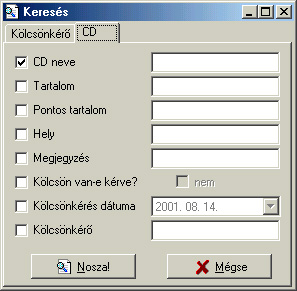

Keresés
Alapértelmezett
ikonja: |
|
| Pillanatkép: |
 |
Itt kereshetsz rá kölcsönkérõ(k)re vagy CD(k)re bizonyos kritériumok alapján. Csak a bepipált
mezõkre keres. Miután kész vagy a feltételek bevitelével (fontos a kis- és a nagybetû!),
kattints az adott lapon ("Kölcsönkérõ" vagy "CD") található "Nosza!" gombra. Nem kell
helyettesítõ-karaktereket (*, ?) alkalmazni, a keresõ algoritmus a beírt szöveket keresi az
adatbázis mezõjének szövegében. A keresés (fõleg nagyobb adatbázisoknál) lassú lehet, de megéri
kivárni, mert a végén egy elegáns animációval elõtunnek a keresési eredmények. A "Mégse"
gombbal zárhatod be az ablakot.